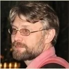

Учреждено ООО «Тайшань» — для развития ТКМ, переводов специализированной литературы, связей с центрами КНР и поддержки врачей.
История «Тайшань»
Древняя система знаний в современной медицинской практике
С 2004 года развиваем знания традиционной китайской медицины в Воронеже и Центрально-Чернозёмном регионе.

О центре
От профессионального сообщества — к собственному медицинскому центру
ООО «Тайшань» было создано в 2004 году для развития традиционной китайской медицины в Центрально-Чернозёмном регионе. Команда переводила профессиональную литературу, выстраивала связи с учебными и лечебными центрами КНР, разрабатывала программы и организовывала врачебные стажировки.
В 2012 году открылся собственный медицинский центр — пространство, где специалисты смогли применять накопленные знания в рамках лицензированных видов медицинской помощи.
ЛицензияЛО-36-01-001077
Лицензия получена 25 сентября 2012 года на рефлексотерапию, мануальную терапию, медицинский массаж и неврологию.
Открыт собственный медицинский центр для помощи пациентам, прежде всего при хронических состояниях.
Центр ведёт приём в Воронеже по адресу: улица Красных Зорь, 38.
За пределами приёма
Обучение, переводы и профессиональный обмен
Литература по ТКМ
Переводы иностранной профессиональной литературы — одно из направлений деятельности компании.
Связи с КНР
Контакты с учебными и лечебными центрами Китая, поставщиками фитосырья и готовых формул.
Обучение и стажировки
Центр разрабатывает учебные программы и организует врачебные стажировки в клиниках Китая.
Подробнее об обучении →Команда
Врачи центра
Команда центра ТКМ «Тайшань» — специалисты с разным опытом, которые нашли своё призвание в оказании медицинской помощи.

Комаров Евгений Юрьевич
Врач-рефлексотерапевт · основатель и директор ООО «Тайшань», главный врач центра
Занимается китайской медициной больше 20 лет. В 1993 году окончил Воронежский медицинский институт, ещё студентом начал практиковаться в ТКМ под руководством А. Н. Байрамова — тогда уже известного китаиста. Более 10 лет работал в Воронежском вертебрологическом центре, затем в гомеопатическом центре «Кассиана», а в 2012 году возглавил центр китайской медицины «Тайшань».
Учился в 1996 году на кафедре А. Т. Качана в СПб МАПО, с 2003 по 2005 год — в Учебном центре Пекинской академии традиционной китайской медицины, в 2007 году прошёл стажировку в пекинской клинической больнице Ванцзин по теме «косметическая акупунктура». Особый научный интерес — традиционная китайская фитотерапия.

Байрамов Андрей Нариманович
Врач-рефлексотерапевт
Практикует китайскую медицину с 1983 года. Работал рефлексотерапевтом в больнице «Электроника» со дня её основания, заведующим российско-вьетнамским медицинским центром «Медикор», штатным рефлексотерапевтом санатория им. Горького, затем в «Кассиане», сейчас — в нашем центре. Изучение ТКМ начал со студенческих лет, был внештатным сотрудником московского Института рефлексотерапии до его расформирования в 1985 году.
В 1991 году прошёл длительное обучение в военном госпитале г. Чунцин, где стал личным учеником профессора Го Цинтана — одного из известнейших врачей КНР. В 2003–2005 годах прошёл полное обучение ТКМ по программе Учебного центра Пекинской академии ТКМ. «Патриарх» китайской медицины Воронежа; в своё время дал профессиональный старт нашему главному врачу. Особые интересы — классические методики чжэньцзю (прижигание и кровопускание), китайские единоборства.

Росляков Сергей Иванович
Врач — мануальный терапевт
В 1993–2007 годах работал спортивным врачом воронежской хоккейной команды «Буран». Владеет техникой кинезитерапии — очень мягкой и безопасной разновидности мануальной терапии. Имеет также специальности невролога и кардиолога.
Особый профессиональный интерес — система сухожильно-мышечных каналов, которая превращает мануальное воздействие из способа лечения преимущественно опорно-двигательного аппарата в универсальный инструмент, пригодный и для диагностики, и для лечения внутренних заболеваний и проблем психоэмоциональной сферы — как и в остальных разделах китайской медицины, одним из которых является чжэнгу, китайская мануальная терапия.
Документы
Лицензия и санитарное заключение

01 Медицинская лицензия центра.

02 Санитарно-эпидемиологическое заключение.
Организация приёма
Есть вопрос
перед визитом?
Администратор подскажет доступное время и объяснит, как добраться. Медицинская консультация по телефону не проводится.
+7 473 256-31-86